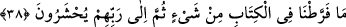
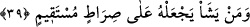

topluluğuna katılır ve Hz. Peygamber (s.a.)’in izine uymuş, onun yoluna girmiş olur.
38. Yeryüzünde yürüyen hayvanlar ve (gökyüzünde) iki kanadıyla uçan kuşlardan
ne varsa hepsi ancak sizin gibi topluluklardır. Biz o kitapta hiçbir şeyi eksik
bırakmadık. Nihayet (hepsi) toplanıp Rablerinin huzuruna getirilecekler.
“Yeryüzünde yürüyen hiçbir hayvan” Yani, dünyanın bölgelerinden bir bölgede
yaşayan hayvanlardan hiçbiri, görülüp bilindiği gibi “iki kanadıyla” havada herhangi
bir yerde “uçan hiçbir kuş yoktur ki, onlar da sizin gibi” halleri korunup kaydedilen,
rızık ve ecelleri takdir edilen “birer ümmet olmasınlar.”
Uçmanın kanat ile olduğunun belirtilmesi, tekid içindir. Nitekim “İki gözümle
gördüm.” ve “İki elimle tuttum.” denir. Yahut da bu ifade sürat ve hızdan mecazdır.
Çünkü bir kimse hızlı gidince “Falan, uçtu gitti.” denilir.
“Biz kitapta hiçbir şeyi eksik bırakmadık.” Yani, biz Kur’ân’da önemli hiçbir şeyi
ihmal etmedik, açıkladık. Allah Teâlâ, mahlukatının faydasına olan her şeyi gerektiği
gibi Kitab’ta beyan etmiştir. Her şeyi ya mufassal olarak, yahutta mücmelen (özet
olarak) beyan etmiştir. Mufassal olarak açıklamasına, “Cana can, göze göz” (Mâide,
5/45) ayeti, mücmel (özet) olarak açıklamasına ise “Rasûl, size ne verdiyse onu alın,
size neyi yasakladıysa ondan sakının.” (Haşr, 59/7) âyeti örnektir.
Rivayet edilir ki İmam Şafiî, Mescid-i Haram’da oturmaktaydı. Dedi ki: “Bana ne
sorarsanız, onu Allah’ın Kitab’ından cevaplayacağım.” Bunun üzerine bir adam: “Eşek
arısı öldüren ihramlı kimse hakkında ne dersin?” diye sordu. İmam Şafiî: “Bir şey lazım
gelmez.” diye cevap verdi. Soru soran: “Peki, bu Allah’ın Kitabı’nın neresindedir?”
dedi. Bunun üzerine İmam Şafiî “Rasûl size ne verdiyse onu alın…” (Haşr, 59/7)
âyetini okudu. Sonra da Rasûlullah (a.s)’e varan isnadla şu hadis-i şerifi rivayet etti:
“Benim sünnetime ve benden sonra hulefâ-i râşidinîn sünnetine uyun.” Sonra da Hz.
Ömer’e isnâd ederek şu sözü zikretti: “İhramlı, eşek arısını öldürebilir.”
“Sonra onlar” kıyamet gününde başkasına değil ancak “Rablerinin huzuruna
toplanacaklardır.” O da aralarında hükmedecektir.